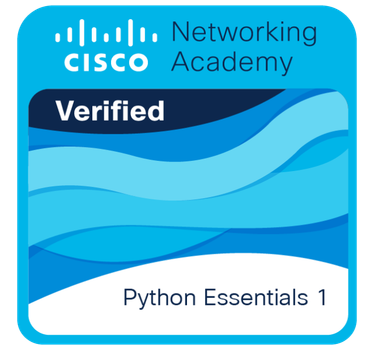

Meus Certificados
Descubra as habilidades que domino e que me permitem criar soluções criativas e funcionais para meus clientes.
-

AWS Certified Cloud Practitioner
-

AWS Re/Start Graduate
-

AWS Educate Getting Started with Cloud Ops
-

Google AI Essentials
-
Linux Unhatched
-

Python Essentials 1
-

Credly
-

Ver mais